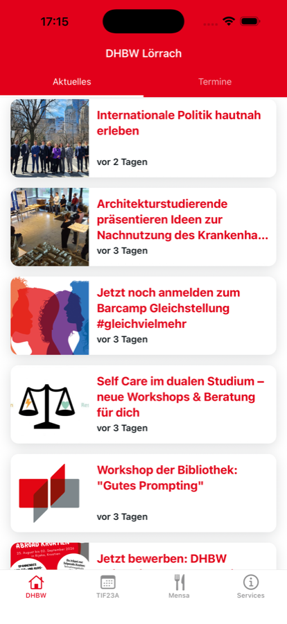
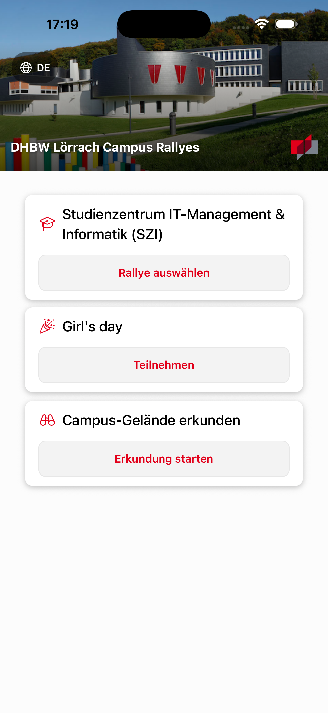
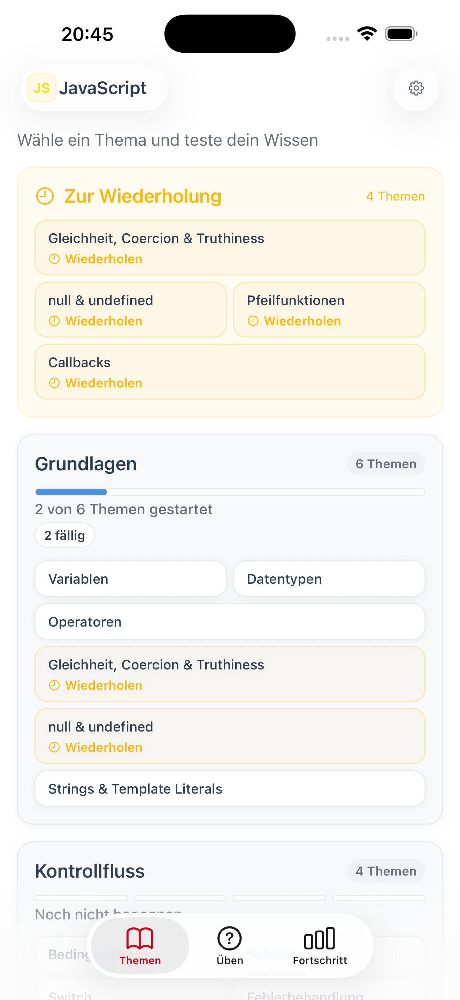
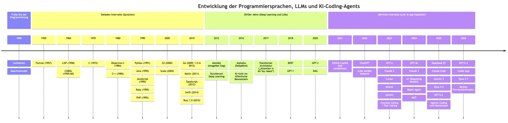
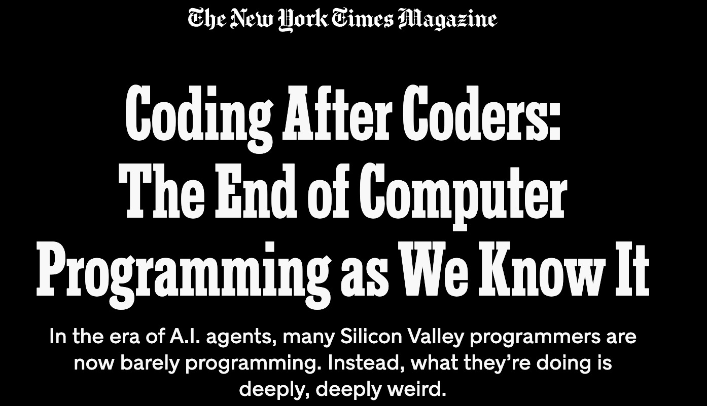
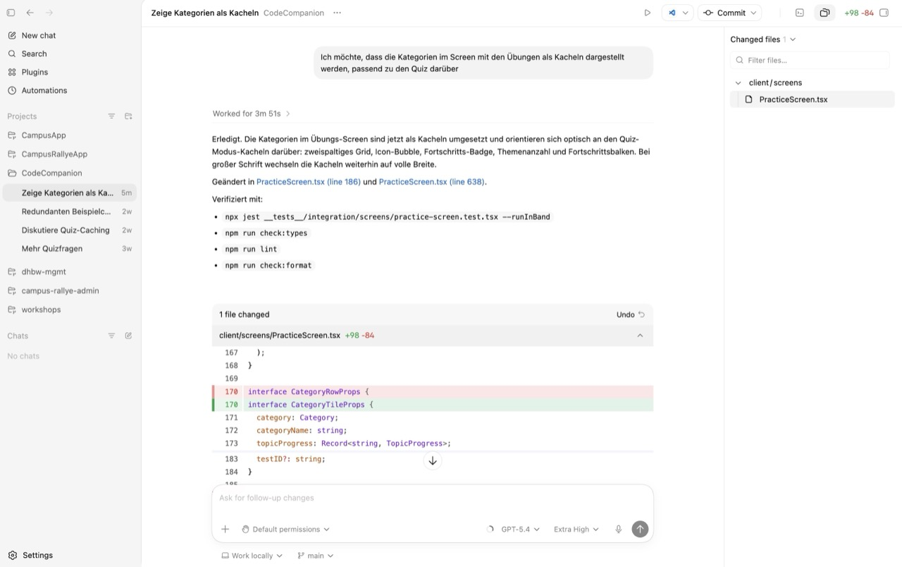
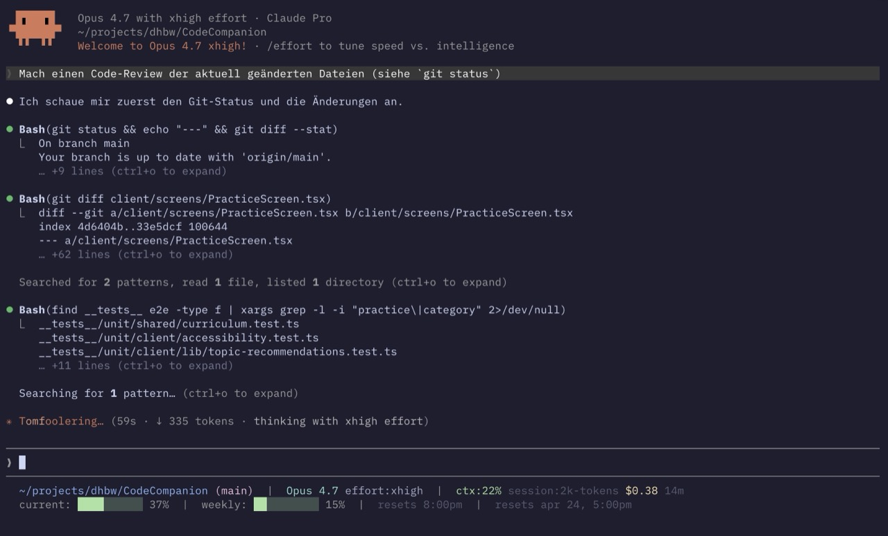
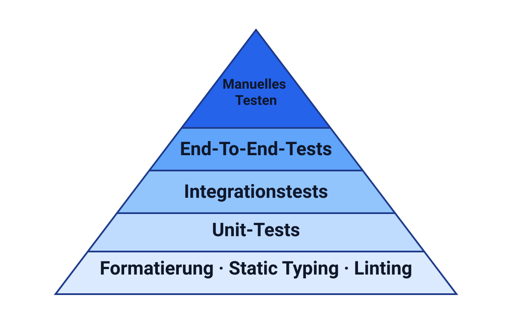

Professor seit 2013
Im Studienzentrum IT-Management & Informatik (SZI) der DHBW Lörrach
Professor seit 2013
Im Studienzentrum IT-Management & Informatik (SZI) der DHBW Lörrach
Softwareentwicklung
In der Lehre und Projekten: Campus App, Campus Rallye, Code Companion, u. a.



Wer nutzt täglich irgendein KI-Tool?
Wer hat Erfahrungen mit Claude Code oder Codex?
Fokus
Es geht hier überwiegend um den Einsatz von KI in der Programmierung.
Positive Sichtweise
Entwicklungen in der Softwareentwicklung sind furios und spannend.
Abgrenzung zu anderen wichtigen Themen
Auswirkungen von KI auf Umwelt, Gesellschaft oder Politik werden hier nicht behandelt.
Wo stehen wir gerade?
Entwicklungen der letzten Jahre und aktueller Stand der Technik beim Coding mit KI.
Wie sichern wir die Qualität?
Von herkömmlichen Best Practices und neuen Möglichkeiten mit KI.

Programmierung ist Handarbeit
Code von Hand getippt. In modernen IDEs gibt es höchstens Autovervollständigung.
Anspruchsvoll und aufwändig
Kenntnisse in Syntax-Details und vielfältige Erfahrungen mit Schnittstellen sind nötig.
Langsam und teuer
Die Arbeit mit Programmcode war stets ein wesentlicher Kostenfaktor und Engpass.

Mehr Produktivität
KI-Vorschläge als erweiterte Autovervollständigung.
Gleiche Workflows
Abläufe beim Programmieren bleiben gleich, ähnliche Tools folgen (u. a. Cursor).
Inkrementelle Verbesserungen
Das Schreiben von Code wird stückweise schneller.
Lernbegleiter und Assistent
Code erklären lassen · Fehler finden und fixen · Alternativen anfragen · Feedback einholen
Chat oriented programming
Qualitätssprung
Deutlich bessere Ergebnisse allgemein mit ChatGPT und bei der Codegenerierung.
Weitere Entwicklungen in 2023 / 2024
Function / Tool Calling, Reasoning, Open Source LLMs, AI-native Editoren (Cursor), …

Echte Coding-Agents
Agents können Code schreiben, testen und komplexe Tools ausführen.
Terminal und CLI
Rein textbasierte Umgebungen erleben ein Revival in KI-Coding-Agents.
Inzwischen gibt es einige CLI-Agents bzw. Harnesses:
Coding-Agents funktionieren!
Um den Jahreswechsel 2025/26 gibt es viele erstaunte Berichte in der Coding-Welt.
Komplette Transformation
Coding-Agents können komplexe Aufgaben der Programmierung übernehmen und über längere Zeiträume hinweg zuverlässig, eigenständig und zielführend arbeiten, wenn die Aufgaben, der Kontext und die Anweisungen stimmen.




Vibe Coding
"I just see stuff, say stuff, run stuff, and copy paste stuff." — A. Karpathy (ex OpenAI, Tesla), Feb 2025
Sinnvoll für Prototypen, „Wegwerf“-Apps und persönliches Ausprobieren.
Agentic Engineering
„Echtes“ Software Engineering für produktive Apps. Der Mensch steuert, überprüft und gestaltet die Software mit KI-Assistenz. Programmcode wird von Agents generiert und getestet.
Sub-Agents
Innerhalb eines Projekts können verschiedene Agents unterschiedliche Rollen ausführen.
Parallele Agent-Sessions
Gleichzeitige Arbeit an mehreren Projekten mit mehreren Agents/LLMs ist möglich.
Agents können Fehler finden, die Menschen übersehen
Anthropics Mythos fand laut Project Glasswing eine 27 Jahre alte kritische Schwachstelle in OpenBSD. Siehe dazu z. B. www.simonwillison.net/2026/Apr/7/project-glasswing.
Menschliche Schwachstelle
Vollständige manuelle Prüfung skaliert schlecht und bleibt fehleranfällig.
Wirkung
Der Flaschenhals verschiebt sich und die gewonnene Produktivität sinkt wieder.
Ökosystem
Spezialtools übernehmen einzelne Rollen wie Review, Suche, Security oder PR-Begleitung.
Mein Ansatz
Produzieren und Hinterfragen bewusst auseinanderziehen — keine End-to-End-Automatisierung.
Problem: Skill Atrophy
Durch bewusstes „Entschleunigen“ mit manuellen Reviews und Coding Sessions.
Kritische Aspekte selbst ausgestalten
Datenschema, Design, Architektur, Schnittstellen (APIs), Security, usw. werden von Menschen ausgearbeitet und höchstens mit KI-Assistenz geprüft und umgesetzt.
Vor der Generierung
Gute Prompts ersetzen keine Anforderungen: Was soll gelten, wann ist die Aufgabe fertig, welche Randfälle sind relevant?
Nach der Generierung
Automatisierte Checks, Reviews und Laufzeitbeobachtung müssen schnell sichtbar machen, ob der Code wirklich trägt.
Deterministische Artefakte
Wie können wir die Software erneut generieren oder komplett reproduzieren?

LLMs, Tools und Harnesses haben Schutzvorkehrungen
Können wir denen vertrauen?
AGENTS.md, Hooks, Routines, Commands, usw.
Problem: Agents/LLMs sind im Kern nicht-deterministisch…
Least Privilege
Guardrails sollten technische Grenzen setzen: minimale Rechte, klare erlaubte Befehle und nachvollziehbare Logs.
Eigenverantwortung
Unterschiedliche Setups verlangen verschiedene Ansätze.
VPS, Virtuelle Maschinen, Docker-Container, usw.
Festlegen, auf welche Daten oder Produktionssysteme Agents zugreifen können.
Keine Produktionsdaten
Agents sollten in isolierten Umgebungen arbeiten: minimale Secrets, keine produktiven Datenbanken und keine direkten Deploy-Rechte.
Autopilot
Andererseits: Agents entfalten ihr volles Potenzial erst bei ausreichend Zugriff (yolo mode).
Tradeoffs
Kompromisse zwischen Sicherheit und Produktivität müssen bewusst getroffen werden.
Spezielle Sprachen und Umgebungen
Sind Programmiersprachen und Frameworks weniger relevant, da diese für den Menschen gedacht waren?
Verifikation
Könnten formale Methoden bzw. Spezifikationen praktische Bedeutung erlangen?
KI-Agents können viele Standardaufgaben schneller erledigen und erzeugen bei guter Steuerung oft brauchbaren Code.
Code ist seltener der Engpass und kann deutlich günstiger und schneller produziert werden.
Die Schnittstelle verschiebt sich weg vom direkten Schreiben in Programmiersprachen.
Softwareentwicklung umfasst viel mehr als nur die Programmierung.
Agentic Engineering ist noch sehr neu und es gibt viele ungeklärte Fragen.
Arbeitsmarkt
Jevons-Paradox, mehr Softwarebedarf und neue Rollen sprechen eher für Verschiebung als für Stillstand.
Breite Nutzung
ChatGPT, Gemini oder AI Studio senken die Einstiegshürde massiv.
Skill Atrophy
Systeme wie Code Companion können helfen, aktives Lernen und bewusstes Verstehen zu erhalten.
Modelle
Neben Codex und Claude spielen Gemini, Gemma, Modelle aus China und Mistral aus Europa eine Rolle.
These
Weniger Tipparbeit, mehr Verantwortung für System, Review und Produktverständnis.
Spannung
Wenn Erstellen billiger wird, steigt oft die Nachfrage nach neuen Lösungen.
TODO
Sinnvoll wären zwei bis drei aktuelle Ausschreibungen, die Architektur-, Integrations- oder KI-Kompetenz betonen.
Übertragen auf KI-Coding
Mehr Menschen und Teams können mehr Software bauen als zuvor.
Folge
Das kann den Bedarf an Engineering insgesamt erhöhen statt nur zu reduzieren.